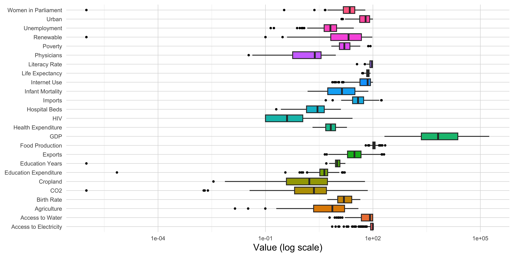
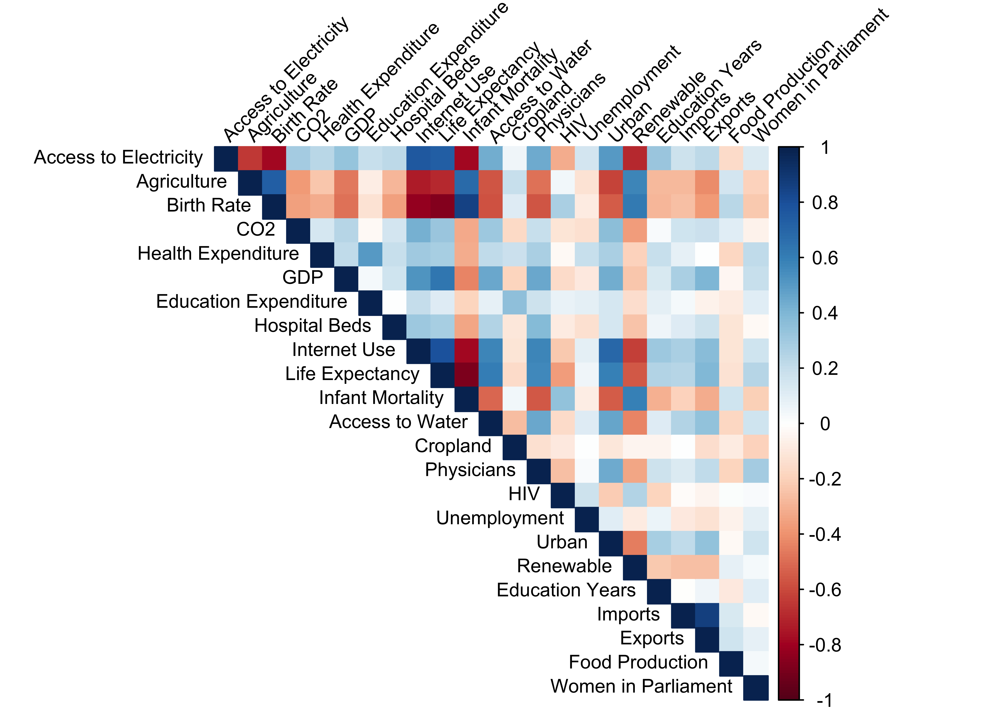
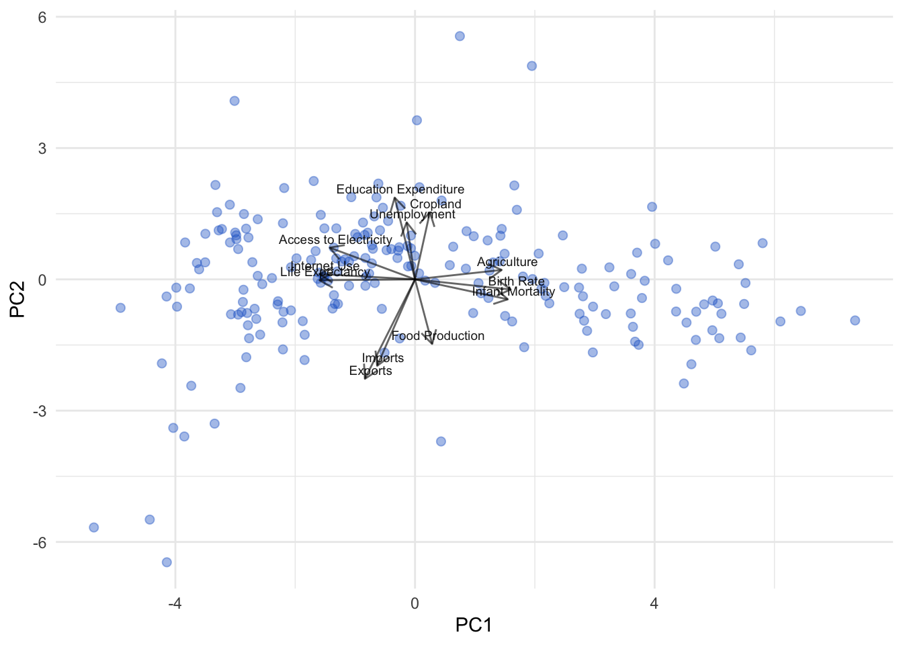
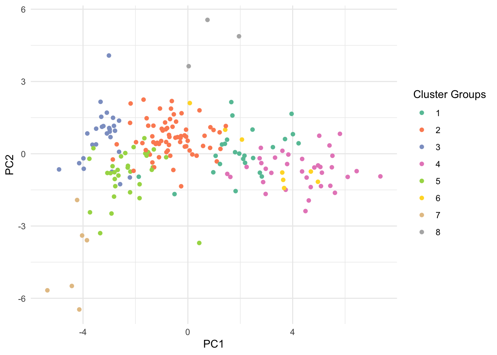

STA662 Final Project:
Analysis of Country Development Profiles
1. Executive Summary
This project aims to group countries into meaningful “development profiles” using 2020 economic, social, and environmental data published by the World Bank. These profiles are designed to draw out variables that drive differences between groups of countries in ways that are helpful to guiding regional economic, cultural, and health investment. The data includes large differences in scale and many missing values. We detail our approach to these challenges in Section 3. A correlation analysis showed that variables relate to each other in structured patterns, supporting the use of principle component analysis (PCA) to reduce complexity. Then, informed by the results of PCA, we tested both k-means and hierarchical clustering methods to construct development profiles, but selected hierarchical clustering for its stability and clearer interpretation. Eight distinct clusters of countries are identified, ranging from advanced economies to low-income nations, regional groups, and unique micro-states. The details of the PCA and clustering methods we employ are outlined in Section 4 (I) and (II) and the resulting insights are discussed in Section 5 (I), (II), and (III).
2. Problem Description
To inform the Wake Forest University Global Policy Initiative (WFUGPI)’s research on international development and policy strategy, we conduct an analysis to identify groups of countries with similar development profiles. We wish to extend the categorization of countries beyond simply “developed” and “developing” to groupings that capture more nuances. Specifically, we will be using a 2020 data set extracted from the World Bank Development Indicators, which consist of a variety of economic, social, and environmental metrics to develop a small number of country groupings that summarize broad global patterns in national progress. In particular, our two main objectives of analysis will be to:
Identify variables or development characteristics that drive similarities and differences between or among countries.
Apply clustering techniques to group countries and visualize groups based on a dimension reduction of those variables.
3. Exploratory Data Analysis
Before conducting the multivariate analysis, we first need to understand the dataset. The World Bank’s dataset consists of 217 observations for 27 variables. Given the diversity of development indicators and the expected differences in scale and distribution, we plotted boxplots of all numeric variables on a log10 scale to identify patterns, extreme values, and potential pre-processing needs. The log transformation was applied to accommodate the wide range of values observed in the dataset, specifically addressing the disproportionately large scale of GDP.

The log-scaled boxplots reveal skewness, extreme outlying countries, and the differences in variance of the data for different variables. Overall, these plots justify the need to standardize data in later multivariate analyses, ensuring that differences in variable scale do not disproportionately influence dimension reduction or clustering.
In addition to scale differences, the dataset contains a substantial number of missing values, which must be addressed to avoid bias or distortion in the analysis. A preliminary inspection revealed a total of 1,087 missing values across the dataset; visual diagnostics clearly show that missingness is not random - it varies considerably by variable and by country.

We notice that there are two columns, Poverty and Literacy Rate which are missing more than 65% of their values. Because such extensive missingness risks introducing bias during imputation and contributes little informational value for clustering, both variables were removed from subsequent analysis. After eliminating these columns, we conducted a second pass to evaluate missingness at the row (country) level and removed 11 countries which are missing more than 50% of their remaining variables: American Samoa, Aruba, British Virgin Islands, Channel Islands, Curacao, Gibraltar, Greenland, Isle of Man, Kosovo, Sint Maarten (Dutch part), and St. Martin (French part).
For the remaining missing values, we implemented median imputation for each variable. Median imputation was selected for two reasons:
- Robustness to skewness
- Resilience to outliers in the dataset.
After data removal and data processing, we are left with a data set of 23 numerical variables. We then examined how the variables relate to one another. We computed the correlation matrix for all post-imputation variables, shown in Figure 3. Dark blue squares indicate that two variables are highly positively correlated, while dark red squares indicate that two variables are highly negatively correlated. White squares indicate two variables are relatively uncorrelated.

We see that the columns are in general, not very highly correlated. However, there are still several coherent clusters of correlated variables that emerged. These patterns suggest that the dataset is multidimensional, validating the appropriateness of dimension reduction tools such as PCA for extracting interpretable axes of variation.
4. Methods
(I) PCA (Principle Component Analysis)
To be able to group countries into similar development profiles, we hope to be able to identify variables that explain variation between or among groups. These variables differentiate countries the most, helping policymakers understand and compare national development pathways. To facilitate this, we employ principal component analysis (PCA).
PCA is a method for dimension reduction - it reorganizes the data so the most important underlying patterns come first, making complex multidimensional datasets easier to understand and analyze using traditional 2-dimensional or 3-dimensional visualizations. To be specific, PCA describes the variation in a set of correlated variables in terms of a new set of uncorrelated variables (principal components, or PCs), each formed from a linear combination of the original. The first principal component captures the direction of maximum variance, and each subsequent component captures the next largest variance while remaining orthogonal (uncorrelated) to the previous components. Observations (in our case, countries) can then be plotted onto a plot of the first two principle components (that is, the two principle components that capture the largest variation in the dataset) to extract insight into the relationship between observations.
(II) Clustering
Clustering is a technique that aims to partition data into groups of observations, where within group observations tend to be more similar than between group observations.
We considered two algorithims to segment the data: K-means and agglomerative hierarchical clustering. K-means clustering is an algorithm where a predefined number of clusters is chosen, and the optimal assignment of individual observations is found by minimizing the within group dispersion until further minimization is no longer possible. Agglomerative hierarchical clustering begins with all observations as unique clusters and iteratively merges until all observations are in the same cluster or a stopping criterion is met.
Ultimately, we determined to use hierarchical clustering over k-means clustering for 2 reasons. First, k-means clustering is a stochastic, or random, algorithm. This means that the final clustering assignments could be different from one execution of the algorithm to the next when holding the number of clusters constant, especially when the underlying data set has a high number of variables, as in our case. Second, an advantage of hierarchical clustering is the ability to understand how closely related clusters are to one another. This might be particularly useful in this case, where we might want to understand how different national development profiles that are developed under the algorithm are related to one another. We selected to stop the hierarchical clustering algorithim at 8 clusters to balance ease of interpretation and a more nuanced segmentation of countries’ national development.
5. Discussion
(I) Principle Component Analysis (PCA)
We carried out a PCA on the dataset accounting for different scales of variables, as explained in Section 3.
The first PC explains 35% of the total variance in the dataset, while all subsequent PCs explain less than 10% individually. This implies that while much of the variation between countries can be explained by a single composite of metrics (which, as we will see, are associated with traditional economic development attributes), there is also considerable variation to be explained by other less traditionally considered variables.
Variable Contribution to Principle Components
An advantage of using PCA is it allows us to identify the original variables that contribute strongly, either positively or negatively, to each principal component.
These variables are listed in Table 1 below in order of importance. For each principal component, variables appearing at the top of the column contribute more strongly than those listed later. For example, under the PC1 column, six variables were identified as strong contributors, with the first variable ‘Internet Use’ having the greatest contribution (which is negative) among them. If a variable is included within brackets ‘()’ it indicates that it contributes negatively to that principle component.
| PC1 (35.06%) | PC2 (9.20%) | PC3 (6.74%) | PC4 (6.44%) | PC5 (5.28%) | PC6 (4.94%) | PC7 (4.45%) |
|---|---|---|---|---|---|---|
| (Internet Use) | (Exports) | Imports | Women in Parliament | (Unemployment) | HIV | (CO2) |
| Birth Rate | (Imports) | Crop Land | HIV | Hospital Beds | (Women in Parliament) | (Food Production) |
| (Life Expectancy) | Education Expenditure | Education Expenditure | Unemployment | Physicians | Hospital Beds | |
| Infant Mortality | Health Expenditure | Exports | (Cropland) | (Food Production) | ||
| Agriculture | Crop Land | Health Expenditure | Renewable | (Education Years) | ||
| (Access to Electricity) | (Food Production) | Health Expenditure | ||||
| Unemployment |
Biplot of Principle Components
PC1 and PC2 capture 40% of the variability in the dataset. In Figure 4 we visualize the “biplot” of these two principal components, which plots each country with respect to their PC1 and PC2 scores. The arrows represent how the most strongly correlated original variables contribute to these principles components.

In Figure 4, we can see that “Agriculture”, “Birth Rate” and “Infant Mortality” are positively correlated with PC1 while “Access to Electricity”, “Internet Use” and “Life Expectancy” are negatively correlated. This can be confirmed by referring to Table 1 (first column). So, it is clear that PC1 is positively correlated with variables that are traditionally associated with “developing countries” (high birth rates and infant mortality) and negatively correlated with variables are associated with “developed countries” (high internet usage and access to electricity). So, PC1 represents a “holistic development” axis. PC2, on the other hand, is most strongly associated with exports and imports as a percentage of GDP. This implies it can be interpreted as a “trade” axis, as countries with more negative PC2 scores are more reliant on trade for their economic activity while those with higher PC2 score are less dependent.
(II) Clustering
We developed 8 distinct “development profile” clusters of countries using the hierarchical agglomeration clustering algorithm run on the scaled, centered dataset to prevent overemphasis on variables with larger ranges. These segments are displayed in Table 2 below.
| Cluster | Name | Examples | Description |
|---|---|---|---|
| 1 | The Developing Giants | India, Indonesia, Bangladesh | Lower-Middle income nations often with massive populations. |
| 2 | The Global Middle Class | China, Brazil, Mexico, Turkey | Upper-Middle income industrializing nations. Includes most of Latin America, North Africa, and China. |
| 3 | Established Economies | USA, UK, Germany, Cuba (Anomaly) | High-income, mature democracies with high life expectancy. Cuba is included here due to its health metrics matching the developed world. |
| 4 | Least Developed Countries | Nigeria, Ethiopia, Pakistan, Haiti | Primarily sub-Saharan African countries with younger populations, developing infrastructure, and poorer health metrics. |
| 5 | Diverse, Trading Economies | Japan, UAE, Poland, Russia | A mix of the industrialized East (Japan/Korea), resource-rich Gulf states, and post-Soviet transition economies that are more dependent on trade. |
| 6 | Southern Africa | South Africa, Botswana, Zimbabwe | A geographic cluster based in southern Africa with distinct health demographics (HIV prevalence). |
| 7 | Hyper-Wealthy Financial Hubs | Singapore, Ireland, Luxembourg | Small city-states and nations with high traditional development metrics and trade disproportionate to their size. |
| 8 | Pacific Micro-States | Kiribati, Tuvalu, Marshall Islands | Tiny island nations distinct for their extreme remoteness and small population size. |
While some of these clusters are defined by traditional economic development attributes (strongly correlated with the attributes associated with PC1 in Section 5 (I)), others are grouped by attributes such as health metrics and geography. For example, Cluster 6, while similar to countries in Cluster 4 with respect to traditional development metrics, is distinguished by those countries’ high prevalence of HIV. Cluster 8 is defined as a grouping of 3 tiny island nations in the Pacific. Other clusters are eclectic groupings that could require further analysis. For example, Cluster 5 includes the developed Asian economies of Japan and South Korea, in addition to post-Soviet countries in eastern Europe and some Gulf states. A possible attribute grouping these countries together is a greater dependence on trade compared to Clusters 2 and 3.
Agglomerative Hierarchical Clustering Dendrogram
When using agglomerative hierarchical clustering, a diagram known as a dendrogram can be created to visualize how different observations and clusters relate to one another. The dendrogram in our case is shown below in Figure 5. The horizontal axis represents each observation in the data, the vertical axis describes the distance between merged clusters, and the graph is a tree that describes how the observations are merged through the execution of the algorithm. Here, we can see that Clusters 3, 5, and 7 are relatively similar, as are Clusters 2 and 8, and Clusters 1, 4, and 6 respectively.

Combination of Clustering and PCA
Figure 6 plots the clusters over the PCA biplot created in Section 5 (I). This combination of techniques allows a greater understanding of how clusters are distinguished from one another.

Interpretations of these clusterings can be attributed to the variables mentioned in Table 1 - which describes how variables contribute to PC1 and PC2. Clusters 1, 2, 3, and 4 are cleanly delineated along PC1 (which, as stated before, can be interpreted as a holistic measure of development). Cluster 5 is situated in-between Clusters 2 and 3 along PC1, but is slightly negatively associated with PC2, which implies these countries have a slightly greater dependence on trade. Clusters 1 and 7 are differentiated by being on opposite ends of the range of PC2. Cluster 6 seems similar to Cluster 4 in this biplot, but further investigation shows that a principle component (PC4) that is highly correlated with HIV prevalence explains that Cluster 6 is differentiated by a positive association with this principle component.
(III) Conclusion
These 8 clusters are groupings that provide enough detail for WFUGPI to differentiate between development profiles beyond traditional groupings such as “developed” and “developing”. In addition, through use of PCA, we are able to identify important variables where these clusters diverge and thus provide insight into targeted investment and policy recommendations for each cluster. Possible areas for further research include a systematic deep dive into how variables differ across clusters or an analysis of what variables are most able to predict how countries are clustered.